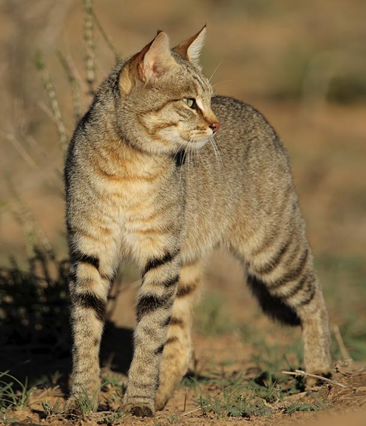
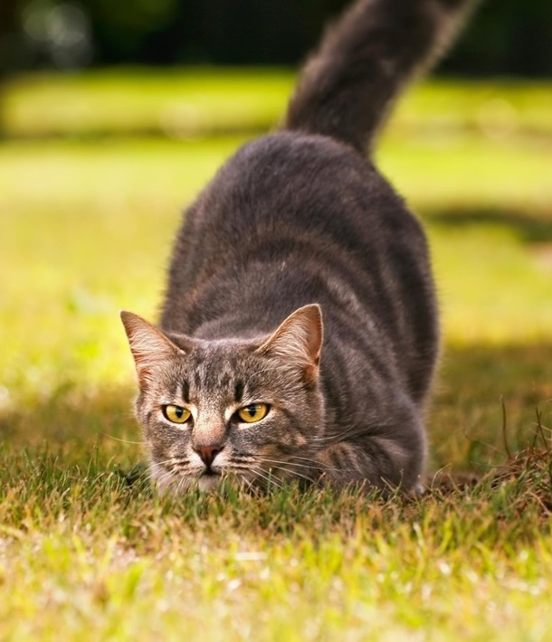
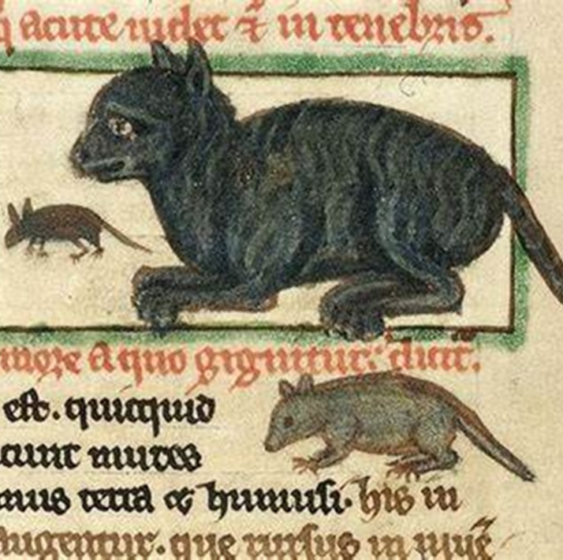
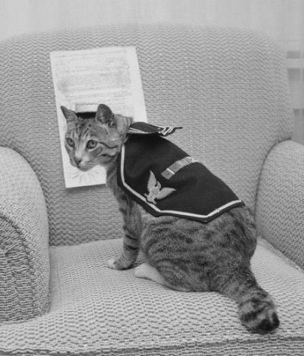

História dos gatos
A história dos gatos é fascinante e repleta de reviravoltas! Vamos explorar como esses adoráveis felinos se tornaram nossos companheiros ao longo dos séculos:
Origens Selvagens:
- Estima-se que o gênero Felis, ao qual pertencem os gatos domésticos, tenha surgido há cerca de 12 milhões de anos a partir dos gatos selvagens africanos.
- O gato-selvagem-africano (Felis silvestris lybica) é considerado o antepassado imediato dos gatos domésticos.
- Esses felinos se espalharam da África subsaariana até alcançar as terras do atual Egito.

Domesticação no Crescente Fértil:
- A primeira onda de domesticação ocorreu na região do Oriente Médio, especificamente no Crescente Fértil (que compreende Israel, Jordânia, Líbano e partes da Síria, Iraque, Egito, Turquia e Irã).
- Com o fim do nomadismo, as populações passaram a utilizar a agricultura como fonte de subsistência. Os cereais armazenados atraíam roedores.
- Para afugentar esses roedores, os humanos começaram a conviver com os gatos, que desempenhavam um papel crucial na caça e eliminação de camundongos e ratos.
- No Egito, os gatos eram tão importantes que leis foram promulgadas para protegê-los. Quem fosse pego “traficando” um gato enfrentava pena de morte.
- Alguns viajantes conseguiram transportar os gatos para outros locais, como a Pérsia, onde esses felinos foram venerados.

Idade Média e Preconceito
- Infelizmente, durante a Idade Média, os gatos passaram a ser associados a maus espíritos e bruxaria.
- A Santa Inquisição queimou gatos junto com pessoas acusadas de bruxaria.
- Esse preconceito teve consequências graves: a redução da população felina permitiu que os ratos se proliferassem, contribuindo para a pandemia da peste bubônica no século 14 na Europa.
- Felizmente, com o fim da Idade Média, os gatos voltaram a ser bem aceitos nas residências e embarcações.

Gatos de Navio e Raças Puras
- Embarcações utilizavam gatos como amuletos da sorte, controlando o número de roedores a bordo.
- Os gatos também se tornaram símbolos de luxo e beleza, sendo usados como enfeites por damas em eventos sociais.
- Nesse período, surgiram as raças puras e os pedigrees, resultado de cruzamentos entre espécies.
- O gato persa, introduzido na Europa por um navegador italiano, é um dos mais apreciados no mundo.

Em resumo, os gatos têm uma história rica e variada, desde suas origens selvagens até sua posição de destaque como nossos companheiros peludos.🐾
Saiba mais em: